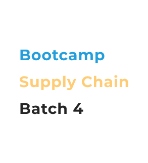

Bootcamp Supply Chain Batch 4
Bootcamp khusus gen Z yang ingin menjadi junior analyst di perusahaan FMCG.
Daftar di sini
Bootcamp khusus gen Z yang ingin menjadi junior analyst di perusahaan FMCG.
Daftar di siniTerdiri dari 7 kali sesi online menggunakan Zoom di akhir pekan, post-read documents untuk memperluas perspektif, dan homework setiap minggu.
Studi kasus di bootcamp ini mencakup penjualan, inventaris, dan pengadaan. Setelah menyelesaikan semua sesi, peserta dapat menjadikan projek sebagai portfolio untuk melamar kerja.
Program ini hanya menerima maksimal 6 peserta dengan pembelajaran berbasis 1 projek besar (tidak terpisah antar sesi). Belajar analisis data dasar, forecasting, dan dashboard analytics menggunakan Microsoft Excel.